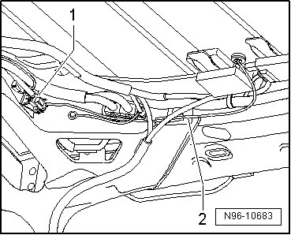
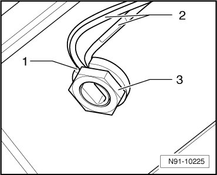

Central Locking and Anti-Theft Alarm System Antenna, through 10.04
Central Locking and Anti-Theft Alarm System Antenna, through 10.04
From 11.04 in USA and Canada, the central locking and anti-theft alarm system antenna (R47) is a roof antenna.
• It is not possible to repair the antenna, since this would impair the reception quality.
• If damaged, it is necessary to replace the central locking and anti-theft alarm system antenna (R47).
Removing
- Lower the rear of the headliner so the antenna base can be accessed.
- Disconnect the antenna wire connector - 1 -.

- Loosen the antenna wire - 2 - from all wiring retainers.
- Remove the nut - 3 - and remove the central locking and anti-theft alarm system antenna (R47) - 1 - upward from the vehicle roof.

Installing
- Install in reverse order of removal, noting the following:
- Secure the new antenna wire in the wiring retainers to prevent rattling noises.